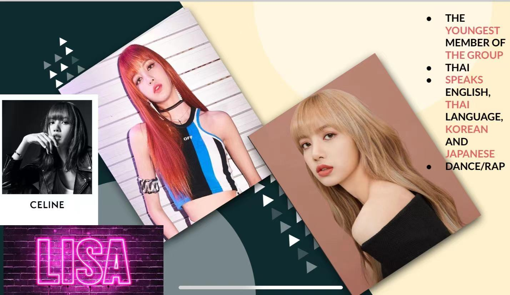
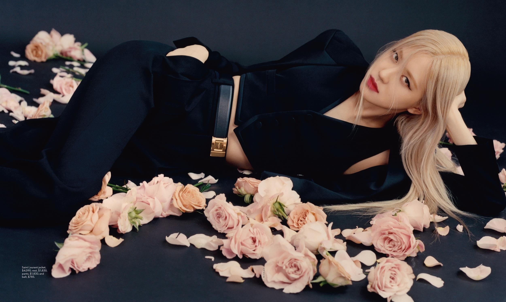
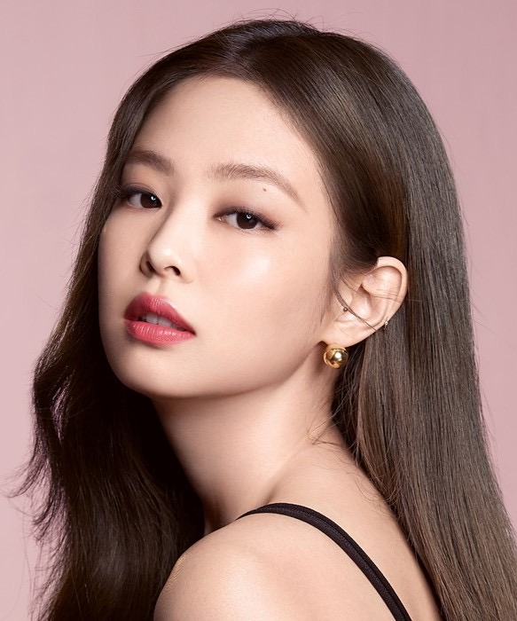
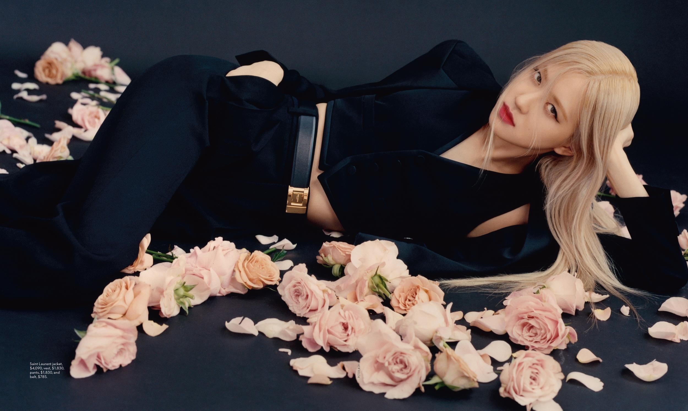
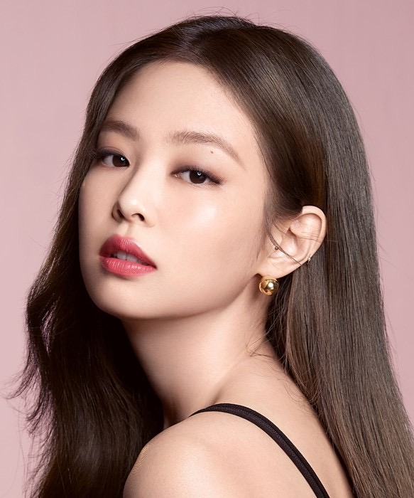

Welcome to my website!
The hottest k-pop girls group in Korea, BLACKPINK, is having
their international worldwide tour in the U.S. now.
BLACKPINK stands out among other girls group not only due
to the marketing strategies of their agent and record company,
they are also good at their girl-crush style and each member has
their unique talent and remembering icon. It took just four years for Blackpink to become one of the
biggest girl bands in the world, with members Jennie, Jisoo,
Rosé and Lisa continuing to smash new records and forge new
ground. They were the first K-pop girl group to play at
Coachella and to reach 1bn YouTube views—now they are
the most-subscribed-to music group on the platform.
Why succeed:
YG has their unique ways to market BLACKPINK and
makes them distinctive from other local Korean girls group,
and the main strategy that YG embraces is called Scarcity.
BLACKPINK is lack of the comeback music and they only
have their comeback shows every eight months. The hunger
marketing makes BLACKPINK mysterious, and their
comeback show will always spur great public attention and
discussion about their fantastic music production and the
world class visuals(attract people in all tastes.
They have their worldwide tour not only in the U.S. bus also in
China, and they also engage in the reality shows on TV and
communicate with their fans both on Instagram and in real life.
Being authentic both on social media and real life has increased
their popularity worldwide and their fans(BLINKS) are so loyal
to them like purchasing the tickets of their tour showcase,
purchasing the BLINK products like pink hammer, or even
waiting in the airport in order to say “hi” to them.

Lisa is the youngest member of the group who is born in 1997,
Thailand, and she is the only foreign member in the group who
wins the audition in Thailand in 2010 among 4000 applicants.
Lisa is known as her title “human barbie” as her barbie doll look
and she is the main dancer and rapper in the group. Lisa has
published a lot of solo dance videos and are welcomed and
acknowledged by the dancers worldwide.
Jennie has lived in New Zealand from nine years old
and dreamed of becoming a ballet dancer.She has been trained
for more than 5 years and is famous for her fabulous outfit and
body shape. Jennie is the first member who released her solo
song named “SOLO”, and she also acts in the upcoming
American TV series called “The idol”. And Jennie is also the
ambassador of Chanel and known as “Human Chanel” and
“Human GUCCI”.
Rose was born in New Zealand and at the age of seven,
Rose move to Australia. In 2015, for the audition to join YG
Entertainment by her father's suggestion, she went to South
Korea and succeeded to join among 700 participants, Rose
then moved to South Korea.
Rose received a reputation of her singing is in a heartbeat and
unique, and YG Label Entertainment announced that Rose will
solo debut in September 2020, following the release of
Blackpink's first full album.
JISSO:
Jisoo joined YG Entertainment in 2011 and acted in a
number of music videos and commercials in her pre-Blackpink
years. She is often referred to as Blackpink's mood-maker.
And famous for her beautiful classical Korean face.
Being a trainee and finally get into the k-pop business is not as
easy as what we think. The k-pop idols need to experience
more than 5 years of training and face the severe judgement of
their company.
According to the interview of four blackpink members, they
talked about the relentless rules of the company and they
would face the leave of the members each month based on
the grade of their monthly test. And they also need to lose
weight, practice till the midnight, and face the criticism of the
company if they did not do well in their solo or group
performance.
Being a trainee and perform on the stage is not like what we can see in the
videos that those girls can wear fabulous clothes, show the
best of their practice and enjoy the compliment of their fans.
We have to get up early in the morning and work out, and
take the dancing classes in the afternoon as well as the
singing class, and we need to do the group dance practice at
night. We need to continue this routine again and again and
finally get the chance to perform in front of our fans.
Therefore, based on the success of BLACKPINK, we not
only need to consider the marketing strategies applied by
their agent and record company, we also have to think about
the effort they devoted to their whole performing life as they
made their dream come true among the other thousands of
girls. And finally I hope everyone achieves their dreams and thank
you for watching.
Welcome! Let's meet Black Pink! Web creator: Lexus Guan
Video's editor: Lexus Guan
Video's Speaker: Crystal Chen
 Jennie has lived in New Zealand from nine years old
and dreamed of becoming a ballet dancer.She has been trained
for more than 5 years and is famous for her fabulous outfit and
body shape. Jennie is the first member who released her solo
song named “SOLO”, and she also acts in the upcoming
American TV series called “The idol”. And Jennie is also the
ambassador of Chanel and known as “Human Chanel” and
“Human GUCCI”.
Jennie has lived in New Zealand from nine years old
and dreamed of becoming a ballet dancer.She has been trained
for more than 5 years and is famous for her fabulous outfit and
body shape. Jennie is the first member who released her solo
song named “SOLO”, and she also acts in the upcoming
American TV series called “The idol”. And Jennie is also the
ambassador of Chanel and known as “Human Chanel” and
“Human GUCCI”.
 Rose was born in New Zealand and at the age of seven,
Rose move to Australia. In 2015, for the audition to join YG
Entertainment by her father's suggestion, she went to South
Korea and succeeded to join among 700 participants, Rose
then moved to South Korea.
Rose received a reputation of her singing is in a heartbeat and
unique, and YG Label Entertainment announced that Rose will
solo debut in September 2020, following the release of
Blackpink's first full album.
Rose was born in New Zealand and at the age of seven,
Rose move to Australia. In 2015, for the audition to join YG
Entertainment by her father's suggestion, she went to South
Korea and succeeded to join among 700 participants, Rose
then moved to South Korea.
Rose received a reputation of her singing is in a heartbeat and
unique, and YG Label Entertainment announced that Rose will
solo debut in September 2020, following the release of
Blackpink's first full album.
 JISSO:
Jisoo joined YG Entertainment in 2011 and acted in a
number of music videos and commercials in her pre-Blackpink
years. She is often referred to as Blackpink's mood-maker.
And famous for her beautiful classical Korean face.
JISSO:
Jisoo joined YG Entertainment in 2011 and acted in a
number of music videos and commercials in her pre-Blackpink
years. She is often referred to as Blackpink's mood-maker.
And famous for her beautiful classical Korean face.

 


